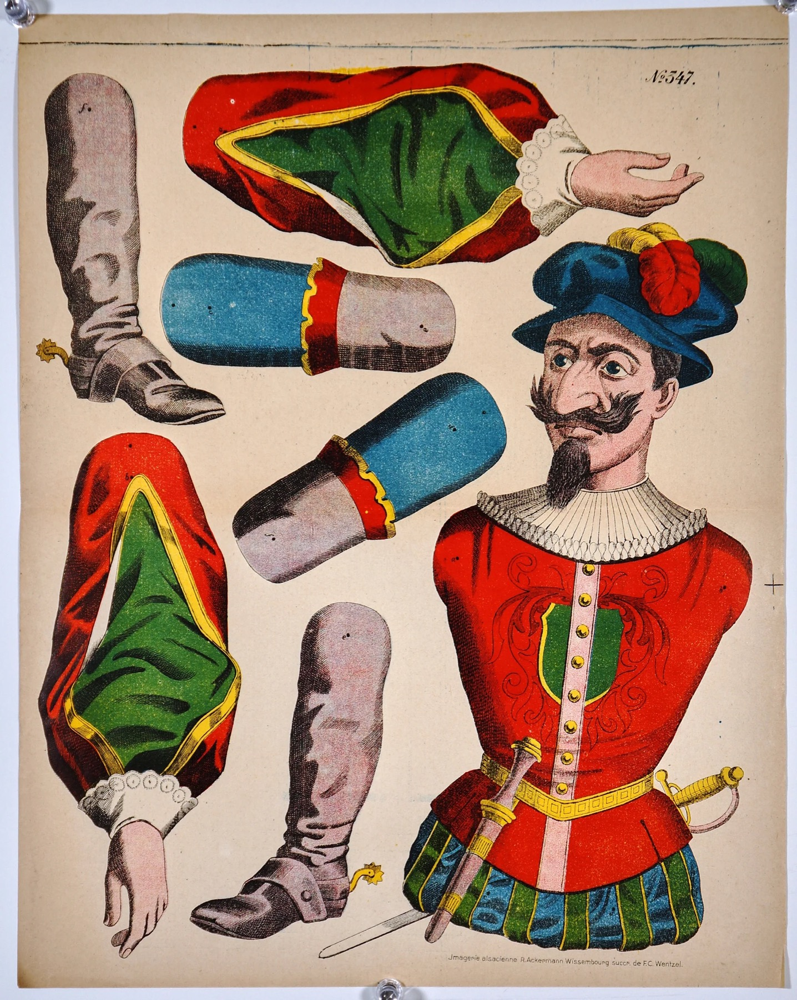
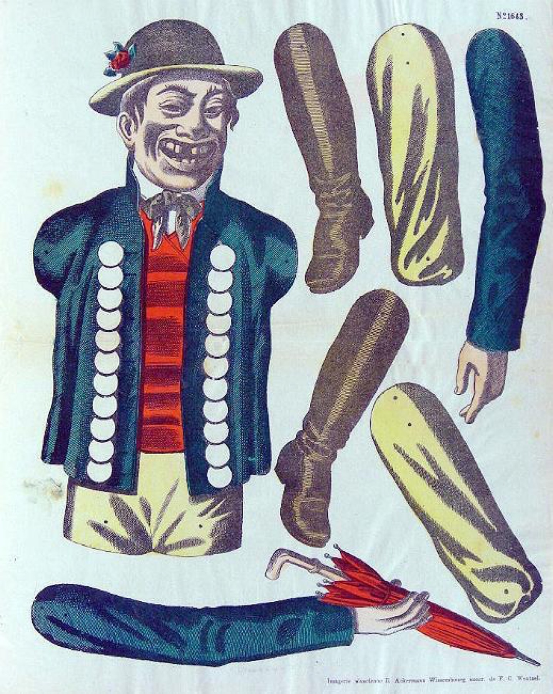
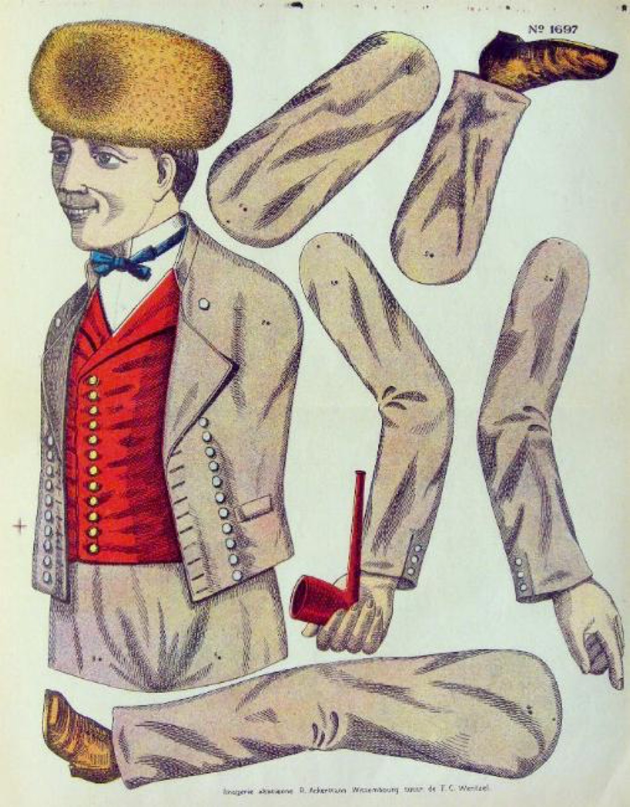
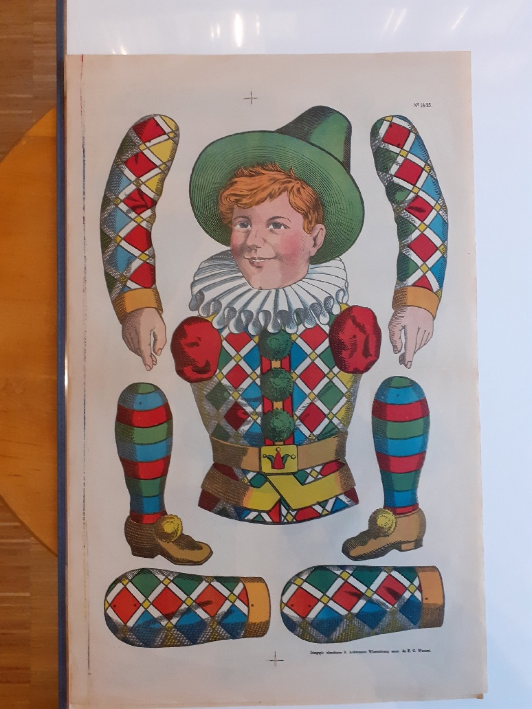
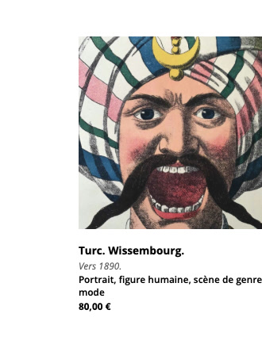

Vintage paper figures from Wissembourg
Funny Paper Jumping Jacks
Original articulated lithographs from the Wissembourg printworks
A private collection of more than 150 original Wissembourg prints. These are vintage objects with charm, colour and nostalgia. In an increasingly digital life, old tactile things like these gain value again. They are offline, haptic and made to bring joy to people, children and adults alike.
Browse the Collection
Categories

Warriors
Soldiers, legionaries and martial figures. Example: Turkish Street Robber.

Historical Figures
Figures drawn from literature and the historical imagination. Example: Don Quixote.

Character Types
Comic, domestic and eccentric figures. Example: Man with Umbrella.

National and Regional Types
Figures framed as national or regional identities. Example: Russian Figure.

Professions
Trades and working identities. Example: Diver.

Harlequins
Stage figures and theatrical comic characters. Example: Harlequin.

Christmas Figures
Festive seasonal figures. Example: Hans Rapp.

Jeu de Massacre
Fairground target figures presented as a separate series. Example: Jeu de Massacre I.